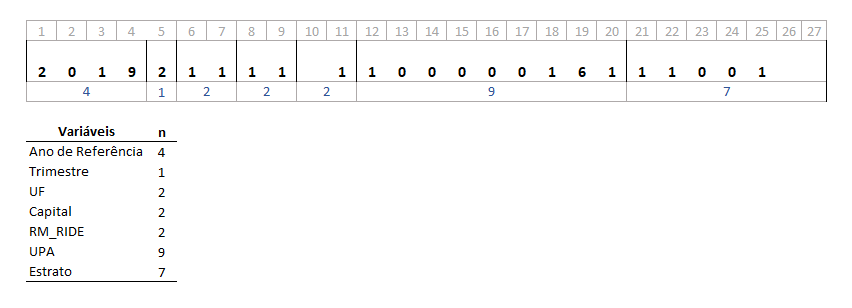

Leitura de Dados
R - Acessando Dados
- Leitura de Dados
Leitura e Gravação de Dados
Importação de dados
- O R permite importar e exportar dados em varios formatos (“xls”,“xlsx”,“csv”,“txt”, “dbf”)
- também arquivos de outros softwares: SAS, SPSS, STATA
leitura de tabelas
- separador de colunas: vírgula(,), ponto e vírgula(;)“, espaço(” "), …
- separador decimal: “vírgula(,)” ou ponto(.)
- valores não observados: “NA”
- geralmente com os nomes das colunas na primeira linha (header)
read.table()
read.table(file, header = FALSE, sep = "“, quote =”"’“, dec =”.“, numerals = c(”allow.loss“,”warn.loss“,”no.loss“), row.names, col.names, as.is = !stringsAsFactors, na.strings =”NA", …
Arquivos csv
- padrão nacional: sep=“;” e dec=“,” - read.csv2()
- outros países: sep=“,” e dec=“.” - read.csv()
Exportação de dados - csv
- write.csv() ou write.csv2()
Exercícios
Download do arquivo [https://tinyurl.com/Int-R01-zip]
- sejam os vetores: x=rnorm(10) e y=rnorm(10,30), crie um objeto com x e y em duas colunas e nomeie como M. Exporte este objeto com write.csv(M,“M.csv”)e write.csv2 (M,“M2.csv”).
- Carregue o arquivo renda_BR_01
- Carregue o arquivo renda_BR_02
- Carregue o arquivo renda_BR_03
Resolução 01
1- Sejam os vetores: x=rnorm(10) e y=rnorm(10,30), crie um objeto com x e y em duas colunas e nomeie como M. Exporte este objeto com write.csv(M,“M.csv”)e write.csv2 (M,“M2.csv”).
Resolução 03
3- Carregue o arquivo renda_BR_02
Leitura de Microdados IBGE
- São Arquivos com formato especial largura fixa
- A largura fixa é como se representa a divisão das variáveis em um registro

Vantagens
- muito compacta - menor tamanho do arquivo para armazenamento
- rápido de acessar com um software adequado
Desvantagem
- Necessita de um arquivo auxiliar (dicionário) com as larguras e identificação das variáveis
- É necessários construir o código descrevendo as posições
Lendo arquivo Morador - POF
> MORADOR <-
+ read.fwf("../pof/MORADOR.txt"
+ , widths = c(2,4,1,9,2,1,2,2,1,2,2,4,3,1,1,14,14,10)
+ , na.strings=c(" ")
+ , col.names = c("UF"
+ , "ESTRATO_POF", "TIPO_SITUACAO_REG"
+ , "COD_UPA", "NUM_DOM", "NUM_UC"
+ , "COD_INFORMANTE", "V0306", "V0401"
+ , "V04021", "V04022", "V04023", "V0403"
+ , "V0404", "V0405", "PESO", "PESO_FINAL"
+ , "RENDA_TOTAL")
+ , dec="."
+ )
>
> read.fwf
- esta função faz o trabalho, mas tem baixa performance
- no arquivo Morador com 13.1MB (178431,18)
- no r: object.size(MORADOR) - ~14MB
- tempo de leitura: ~72s (com arquivo em HD)
Opção mais eficiente read_fwf
- é uma função do package readr
- observe que o comando é diferente (usa "_" como separador)
- os parâmetros também são diferentes
- é 300 vezes mais rápido (na leitura do exemplo MORADOR)
Lendo arquivo Morador - POF (read_fwf)
> w=c(2,4,1,9,2,1,2,2,1,2,2,4,3,1,1,14,14,10)
> end1=cumsum(x)
> start1=end1-(x-1)
> vars = c("UF", "ESTRATO_POF", "TIPO_SITUACAO_REG"
+ , "COD_UPA", "NUM_DOM", "NUM_UC"
+ , "COD_INFORMANTE", "V0306", "V0401"
+ , "V04021", "V04022", "V04023", "V0403"
+ , "V0404", "V0405", "PESO", "PESO_FINAL"
+ , "RENDA_TOTAL")
>
> MORADOR = readr::read_fwf("../pof/MORADOR.txt"
+ ,col_positions = readr::fwf_widths(w, vars) )
> Leitura PNAD-Contínua
- há um package que facilita a leitura: PNADcIBGE
- package feito pelo IBGE
- Está disponivel no site do R (CRAN)
- use: install.packages(“PNADcIBGE”)
PNADcIBGE - get_pnadc
- get_pnadc: faz o download e leitura de um arquivo PNAD_c
PNADcIBGE - read_pnadc
- read_pnadc: faz leitura de um arquivo PNAD_c
- microdata - arquivo txt da PNADc
- input_txt - arquivo txt com o código de leitura SAS
- vars - variáveis desejadas
Lendo dados PNADc - comandos
input_example.txt

exampledata.txt

Lendo dados PNADc - comandos
> library(PNADcIBGE)
> input_path <- pnadc_example(path="input_example.txt")
> data_path <- pnadc_example(path="exampledata.txt")
> pnadc.df <- read_pnadc(microdata=data_path,
+ input_txt=input_path, vars="VD4002")
>
> head(pnadc.df,3)
## # A tibble: 3 x 9
## Ano Trimestre
## <chr> <chr>
## 1 2017 4
## 2 2017 4
## 3 2017 4
## # ... with 7 more
## # variables:
## # UF <chr>,
## # UPA <chr>,
## # Estrato <chr>,
## # V1027 <dbl>,
## # V1029 <dbl>,
## # posest <chr>,
## # VD4002 <chr>